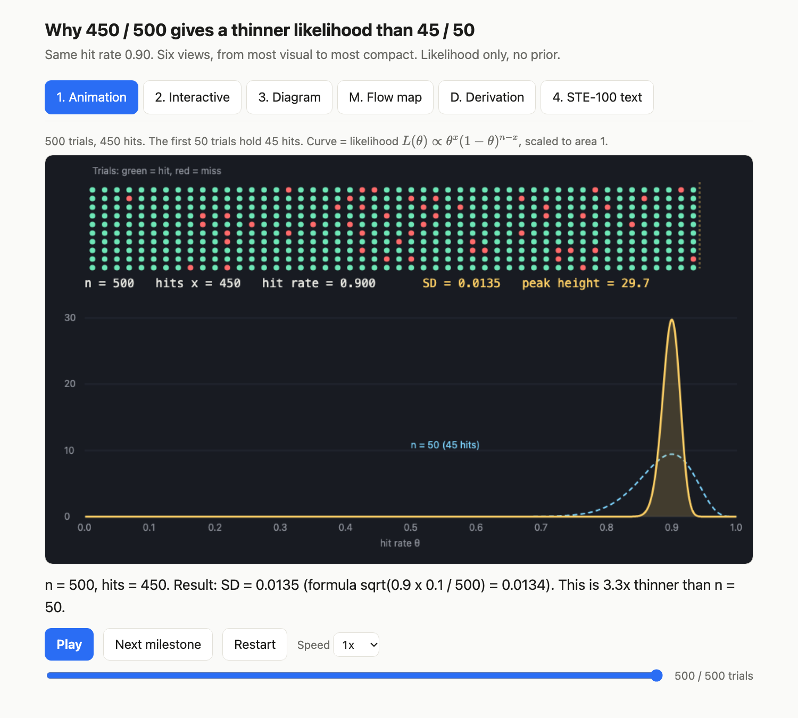
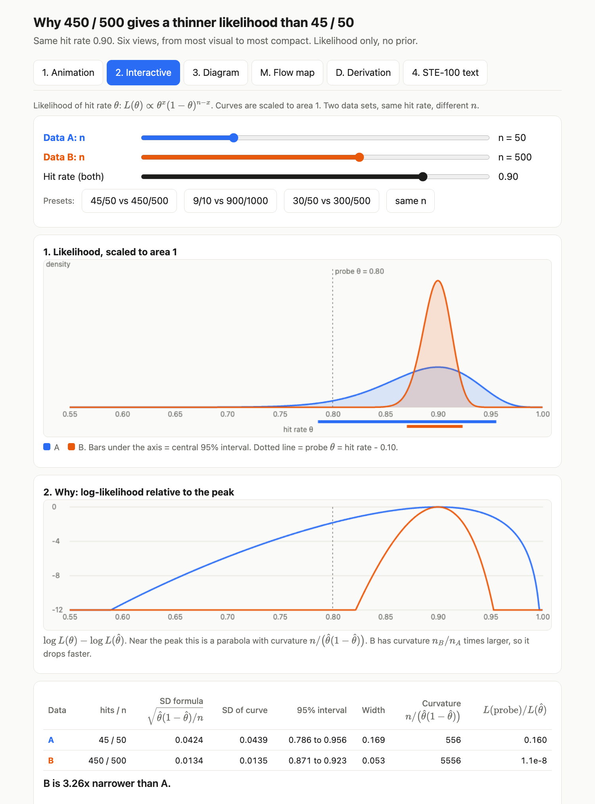
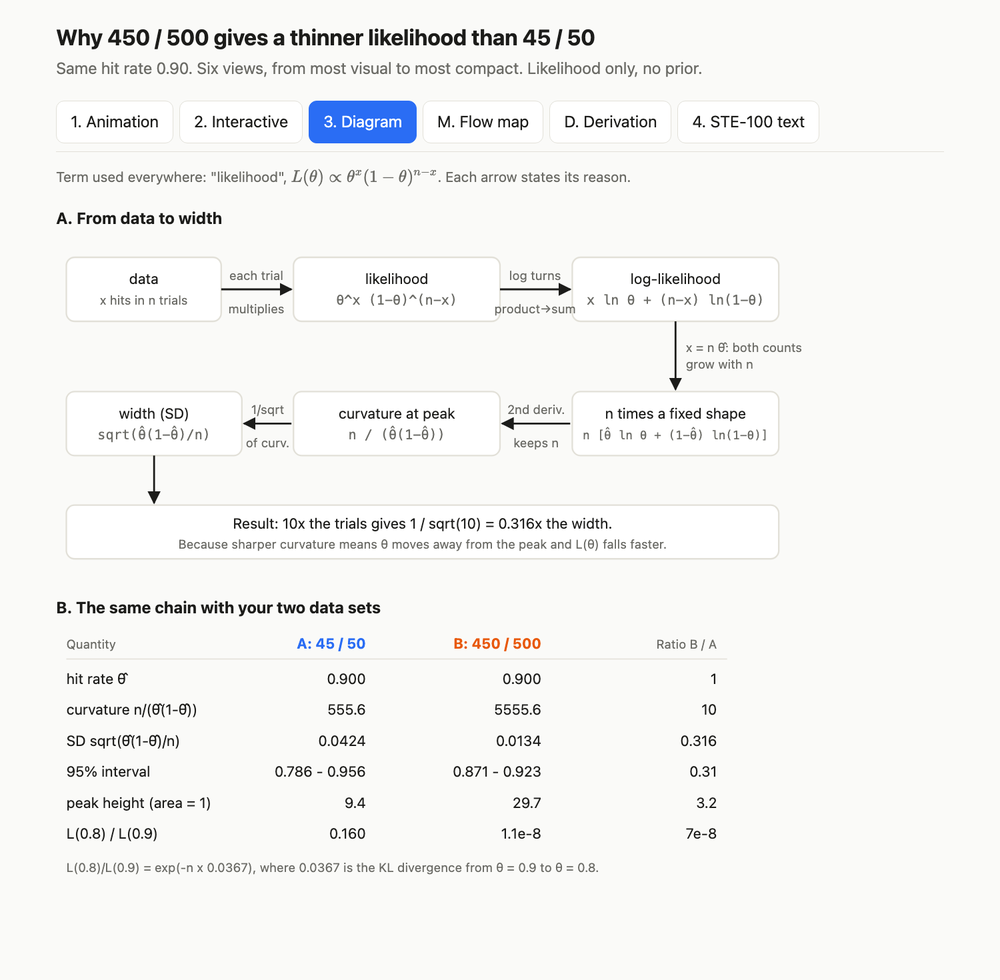
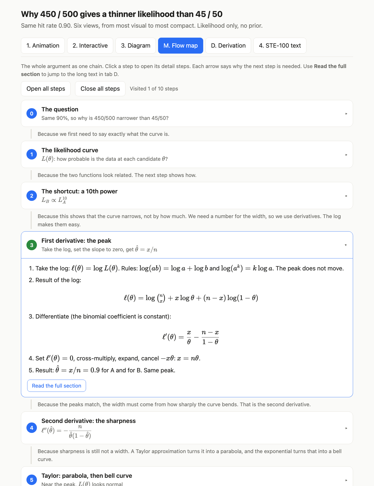
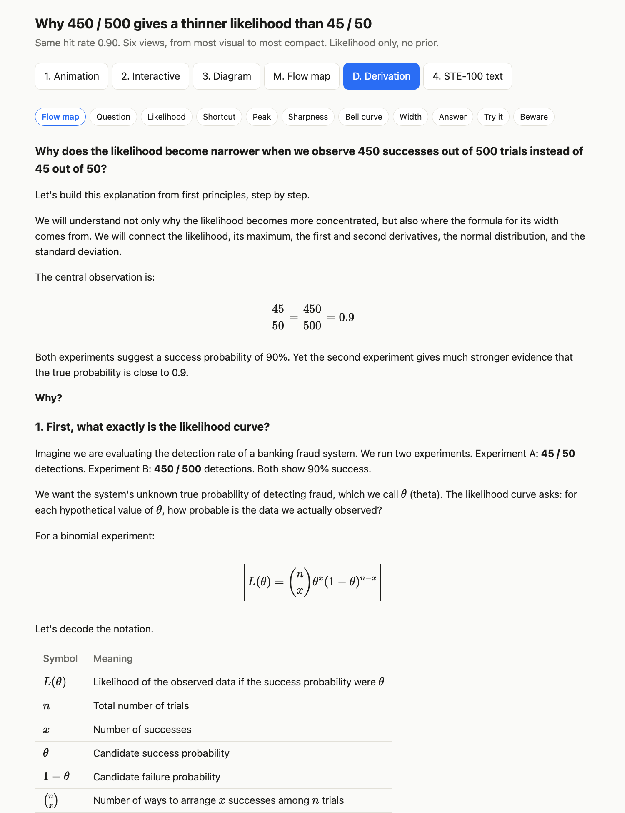
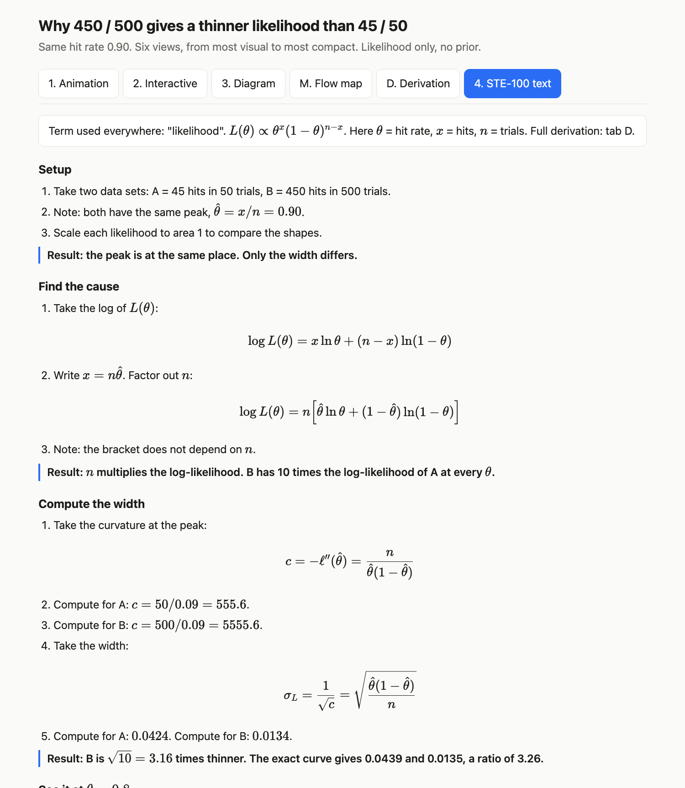

Ask one question and get one tabbed page: an animation, an interactive micro-app, a diagram, a clickable flow map, a full first-principles derivation (for maths topics) and a short strict recap. All maths is typeset, every number is checked by code, and an optional local tutor chat answers questions about any line you click.
The ladder of formats (writing in ASD-STE100, diagrams, web pages, explainer videos) comes from a public post by Andrej Karpathy (1 Oct 2026). This project is independent and not affiliated with or endorsed by him, Anthropic or ASD.
One question: why is 450 hits in 500 so much narrower than 45 hits in 50, when both are 90%? A short lesson with real code, then the same answer as six tabs.
The narration is a text-to-speech voice. Every number comes from code that runs in the video. Open on YouTube ↗
Reading model output is the new bottleneck, and plain text is the slowest way to take in an idea.
The key step is buried in polite padding.
A long derivation makes you forget where you are.
Pretty visuals can hide wrong numbers.
Screens from the demo page. Open the live copy → (the page works offline; only the tutor chat needs the local server).






Tested on macOS only.
| Need | Why |
|---|---|
| Claude Code | Runs the skill (installed as a plugin). |
| Python 3 | Standard library only; no pip packages. |
| A web browser | To read the page. |
| Ollama (optional) | Local models for the tutor chat: qwen3.5:9b, nomic-embed-text. Set names in config.json. The page works in full without it. |
Inside Claude Code:
/plugin marketplace add sabya-chow/picture-says-a-thousand-words /plugin install picture-says-a-thousand-words@picture-says-a-thousand-words-marketplace
Then ask:
a thousand words: explain the central limit theorem